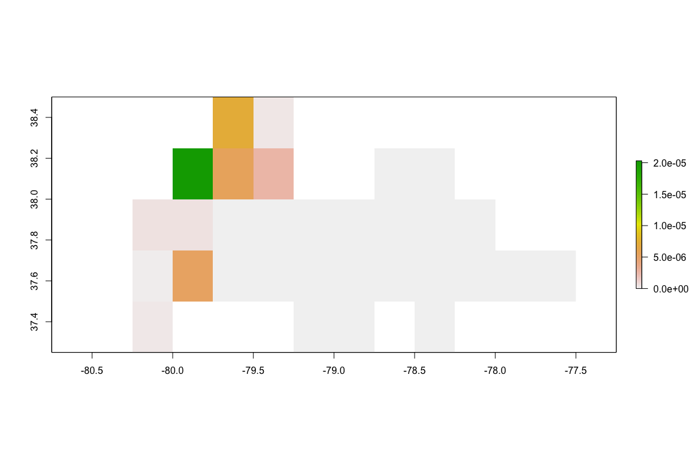

December 17, 2020
R
Hydrology
USGS
NOAA

With all of the rain coming to the southeastern United States, I started to think about how it is affecting the river levels. USGS has established streamflow gauges on many of the major rivers across the country; they have also developed an R package (dataRetrieval) that gives simple access to these gauge measurements and more. In this blog post, I’m going to talk about using functions from the dataRetrieval package to access streamflow gauges, delineate river watersheds, and then compare these datasets with other publicly available raster datasets, such as gridded climate datasets from NOAA’s Physical Sciences Laboratory.
This post requires the following packages to be installed and loaded:
devtools
dataRetrieval
tidyr
ggplot2
raster
ncdf4
USGS provides public datasets with numerous applications; the Central Valley Water Resources project during the NASA DEVELOP program greatly utilized these dataset, particularly groundwater field stations measurements from the National Water Inventory System. USGS researchers continue to develop and maintain the dataRetrieval package to aid in accessing these datasets and other tools. The dataRetrieval package can be installed either through CRAN or GitHub. NOTE: There may be version differences depending on the install method. For the rest of this post, we will be using the GitHub version, which, at the writing of this post, had most recently been updated with functions necessary for my analysis.
console
install.pacakages(“devtools”)
devtools::install_github(“USGS-R/dataRetrieval”)
You can use the readNWISdv function to access streamflow gauges across the country. You need to know the unique USGS identification number for the gauge you are interested in viewing. The second argument refers to the data that you would like to download; “00060” refers to stream discharge in cubic feet per second (cfs). Lastly, you must provide the start and end dates for the dataset.
streamflow-and-precipitation.R
gauge <- "02037500" #Westham Gauge, James River, Richmond, Virginia
streamflow <- dataRetrieval::readNWISdv(gauge, "00060", "2007-01-01", "2020-12-09")
streamflow <- streamflow[,c("Date", "X_00060_00003")]
colnames(streamflow) <- c("Date", "CFS")
streamflow <- streamflow %>% tidyr::complete(Date = seq(min(Date), max(Date), by="days"))
I’ve stored this dataset as a data.frame named streamflow and changed the names of the columns to Date and CFS to be more understandable. I also filled in any missing measurements dates so that there aren’t any gaps in the record for the study period.
streamflow-and-precipitation.R
ggplot2::ggplot(data=streamflow) +
geom_line(aes(Date, CFS))
After plotting the streamflow levels, you can see that the James River recently spiked up to 100,000 cfs, 10 years since the previous spike of a similar magnitude. Obviously, there has been a lot of rain within the James River watershed, so let’s figure out exactly how much. To delineate exactly what sections of the land flow towards the gauge coordinates, I’ve returned to the dataRetrieval package.
streamflow-and-precipitation.R
basin <- dataRetrieval::findNLDI(nwis=gauge, find="basin")$basin
The findNLDI function was added to the most recent version of the dataRetrieval package on GitHub and at the time of writing this post is not currently available in the CRAN version. This function can delineate a watershed for a given USGS gauge. The basin geometry is stored as a multipolygon within a data.frame or tibble. You can simply view the basin using:
streamflow-and-precipitation.R
plot(basin)
The James River flows eastward, so the rightmost section is the furthest downstream. There are a number of tributaries that combine with the main flow as the river makes its way out of the Appalachian Mountains.
If you are interested in delineating watersheds for coordinates not associated with a USGS gauge, I recommend checking out USGS StreamStats tool. It can be accessed as a web application or through R using the streamstats package written by Mark Hagemann. I was originally going to use the streamstats package for this post for some added flexibility, but found that the StreamStats application requires that the gauge coordinates be snapped to the hydrological streamgrid pixels, adding an extra processing step. It’s an informative tool though so I want to be able to implement it in some way.
Now that we have the basin, we can use its geometry to perform zonal statistics on raster datasets. NOAA provides numerous Gridded Climate datasets through the Physical Sciences Laboratory. CPC Unified Gauge-Based Analysis of Daily Precipitation over CONUS RT dataset includes daily precipitation measurements from 2007 to present for the contiguous United States. To be able to follow from here, you will need to download these dataset files, which come in the form of yearly NetCDF files. I’ve stored the files within this directory within my project: “Data/NOAA-PSL/CPC-Unified-Gauge-Based-Analysis-Of-Daily-Precipitation-Over-CONUS-RT/”.
streamflow-and-precipitation.R
precip_files <- Sys.glob("Data/NOAA-PSL/CPC-Unified-Gauge-Based-Analysis-Of-Daily-Precipitation-Over-CONUS-RT/*")
precip_brick <- raster::brick(lapply(precip_files, FUN=function(x) raster::brick(x)))
precip_brick <- raster::rotate(precip_brick)
precip_basin <- raster::crop(precip_brick, basin)
precip_basin <- raster::mask(precip_basin, basin)
This creates a single rasterBrick containing all of the measurements. I used the rotate function to translate the raster from 0:360 degrees to -180:180 degrees longitude. Finally, I used the basin to crop and mask the raster to only include pixels that match the basin. Here’s a plot of the cumulative precipitation during December 12, 2020:
streamflow-and-precipitation.R
raster::plot(precip_basin$X2020.12.07)
To calculate the mean precipitation per day, use the cellStats function:
streamflow-and-precipitation.R
streamflow$Precip <- cellStats(precip_basin, stat="mean")
ggplot(streamflow) +
geom_line(aes(Date, Precip))
To measure the correlation between the mean precipitation in the basin and the streamflow gauge measurement, we can calculate the Pearson correlation using the cor.test function:
streamflow-and-precipitation.R
cor.test(streamflow$CFS, streamflow$Precip, method="pearson")
The correlation value between the two datasets was 0.108, which is a weak correlation, but this should be expected as there are many contributing factors that we did not include, such as seasonality, previous recent rain events, and the fact that precipitation further upstream may not affect gauge levels in the same pattern as precipitation right at the gauge location.
To test the latter reasoning, I wanted to look at how each pixel of the raster individually correlated with the gauge measurements over time. I did not find a standard function to do this; the closest I found was Abdulhakim Abdi’s gridcorts function comparing measuring the pixelwise correlation between two rasterBrick, which would have worked but required that the streamflow gauge measurements be converted into a rasterBrick. Since this was a relatively simple task, I wrote two functions that work in tandem:
streamflow-and-precipitation.R
pixelwiseCorrelation <- function(brick, timeseries, method) {
correlation <- calc(brick, fun=function(x){correlation.test(x, timeseries=timeseries, method=method, value="correlation")})
p.value <- calc(brick, fun=function(x){correlation.test(x, timeseries=timeseries, method=method, value="p-value")})
stats <- brick(correlation, p.value)
names(stats) <- c("correlation", "p.value")
return(stats)
}
correlation.test <- function(x, timeseries, method, value) {
if (all(is.na(x))) {
return(NA)
} else {
if (value=="correlation") {
return(cor.test(x, timeseries, method=method)$estimate)
} else if (value == "p-value") {
return(cor.test(x, timeseries, method=method)$p.value)
}
}
}
pixelwiseCorrelation takes in a rasterBrick, a vector of measurement values, and a correlation method name. Within this function, the calc function performs pixelwise calculations; normally, this function cannot take additional arguments, but by having the called function call another function, we can get around this issue. The first time calc is called, correlation.test returns the correlation estimate because I passed “correlation” into the value parameter; the second time it returns the p-value. These are then combined into a rasterBrick and returned together. With those functions added, we can run the pixelwiseCorrelation and plot the results to see which pixels are most highly correlated.
streamflow-and-precipitation.R
pearson <- pixelwiseCorrelation(brick=precip_basin, timeseries=streamflow$CFS, method="pearson")
raster::plot(pearson)
Correlation
P-value
For this example of the James River, we can see that pixels that are further downstream and therefore closer to the streamflow gauge have higher levels of correlation between precipitation and streamflow. The maximum correlation is 0.139 and minimum is 0.060. As we are comparing measurements on a given day, we aren’t accounting for the time that it takes the water to reach the gauge when raining far upstream. Because of this, rain much closer to the gauge is more directly affecting levels measured.
All of the code used in this post can be found HERE. If you enjoyed this tutorial and want to use this code in your own project, give the repository a star on GitHub and fork the project to your own profile. If you have any questions, create an Issue for the GitHub repository and I will do my best to help!
Pomona, California
|
kitchensjn@gmail.com
|
(804) 572-3197